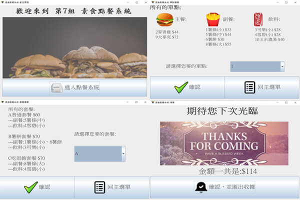
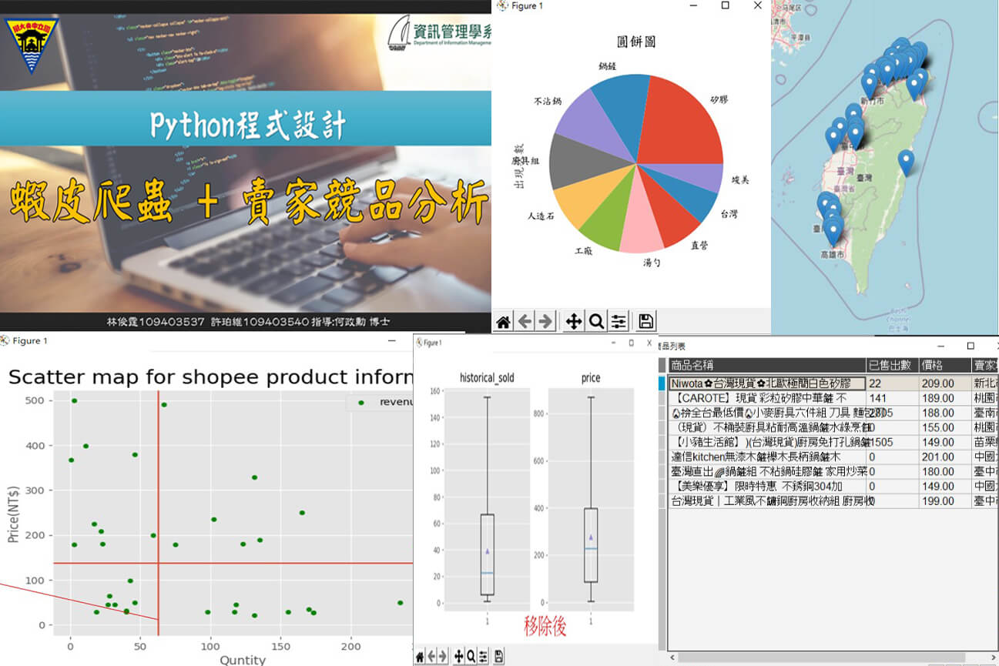

證照
JAVA OCA
JAVA OCP
TOEIC
移動到方框內，有動畫喔~~
| 名稱 | 簡介 | 照片 | 額外資訊 |
|---|---|---|---|
| NCU soccer game (Assembly) |
透過MASM32的函式庫搭配上課所學的ASM語法， 打造出雙方可以互玩的足球射門遊戲， 一位玩家透過WASD控制方向， 一位玩家透過上下左右控制移動，進對方球門得分， 獲勝後出現該玩家的大頭貼，按ENTER可再繼續遊戲。 |
|
|
| Ordering system (Java) |
不管是點套餐還是單點，全部都是由外部的CSV檔讀取， 可以很方便的更換菜單更換套餐組合，不需動到程式碼， 並且最後會列出收據明細給客人，會在店內的交易紀錄檔記錄下每筆訂單、時間等資訊。 |
 |
|
| 蝦皮爬蟲&賣家競品分析 (Python) |
在剛成為賣家不熟悉市場時 , 定價策略顯得尤其重要 為了找到在蝦皮上最佳銷售策略， 所以撰寫了這支蝦皮賣家競品分析。 此次的目標很簡單，掌握競品情報來提高自己銷售業績：
|
 |
|